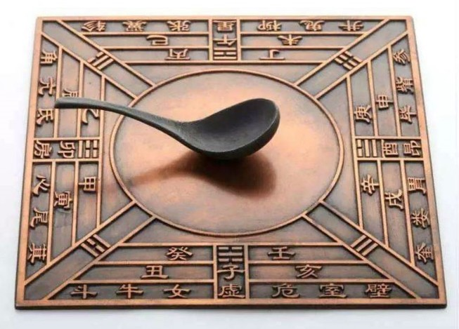

The Chinese were known to be the first inventors of the compass during the Han Dynasty (206 B.C. - 220 A.D.) and the Qin Dynasty (221 B.C. - 207 B.C.). The needle was made of lodestone--a naturally magnetized iron ore--and looked like soup spoons laid on top of a bronze base plate with inscribed cardinal direction points, directional indicators for constellations, and other information/symbols for nature. The first compasses were used for spiritual purposes and as a tool for geomancy--uses for navigation and orientation came later in the 11th century Song Dynasty.
Geomancy refers to “the interpretation of lines and geographic alignments as symbols of the divine” (theSpruce 2019) and the used the compass for geomancy in fortune-telling and Feng Sui. Fortune telling would rely on this compass to guide the best time and location for personal events, and so would Feng Sui--the practice of creating harmony between the individual and their environment by arranging pieces in living spaces so that it creates balance with the natural world.
Geomancy refers to “the interpretation of lines and geographic alignments as symbols of the divine” (theSpruce 2019) and the used the compass for geomancy in fortune-telling and Feng Sui. Fortune telling would rely on this compass to guide the best time and location for personal events, and so would Feng Sui--the practice of creating harmony between the individual and their environment by arranging pieces in living spaces so that it creates balance with the natural world.